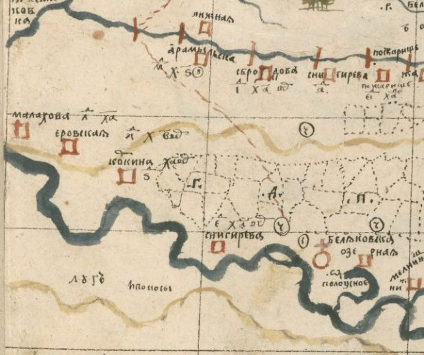
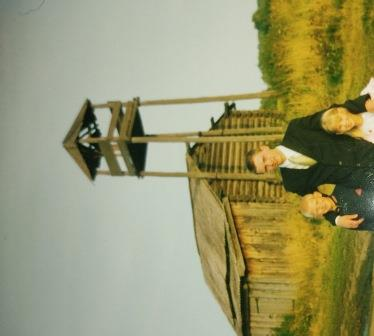

История деревни Малаховой
Начнём повествование с тех времён когда на землях в 80 километрах от современной Малаховой, 1 августа 1580 года отряды казаков во главе со своим атаманом Ермаком захватили татарский городок Чимги-Тура (позже на этом месте появится город Тюмень). После захвата города казачьи отряды отправились собирали дань с татар проживающих в окрестностях Чимги-Туры (возможно они побывали и в местах где расположена современная деревня Малахова). Но уже 9 мая 1581 года Ермак со своим отрядом оставил город и отправился в поход на столицу Сибирского ханства.
С нова же в нашем крае русские появились только 29 июня 1586 года. Это прибыли царские войска во главе с воеводами Василием Сукиным и Иваном Мясным. Они заняли место на реке Туре, там, где когда-то стоял татарский город Чимги-Тура. Где и основали город, который получил название Тюмень. Воеводы Тюмени занялись покорением татар, живших в этих местах. Татары жили оседло в своих юртах и занимались земледелием и скотоводством. Татары проживающие около города Тюмени были разобщены и не имели своих князей, которые могли защитить их от русских войск. Поэтому были вынуждены подчиниться русским властям. Местность по рекам Пышме, Тавде и Тоболу вошла в состав Тюменского уезда. Вдоль рек Беляковки, Пышмы и Исети жили татары прозванием Балаковские, которые платили дань Тюменскому воеводе. Часть балаковских татар перешла на воинскую службу русскому царю и участвовала в походах против не покорных России татар, калмыков и казахов.
В 1646 году с разрешения тюменского воеводы Ивана Ивановича Салтыкова, Максим Васильев и Сила Гаврилов основали Беляковскую слободу между реками Пышмой и Беляковкой (на месте где сейчас находится новое поле около деревни Малаховой). Но чем-то это место не подошло и вскоре Беляковскую слободу переносят на 8 вёрст выше по течению реки Пышмы (на то место где сейчас находится село Беляковское).
На эти места были и другие претенденты (сын боярский Сергей Ушаков, посацкий Семейка Степанов и др. из города Тюмени). Эти люди начинают угрожать слободчикам Васильеву и Гаврилову. И в 1647 году Максим Васильев пишет царю челобитную. В челобитной он сообщает об основании слободы в которую он набрал вольных людей в количестве 15 человек. Эти новые крестьяне строят дворы и распахивают пашни. А также пожаловался на Ушакова с товарищами, что угрожают ему смертью и разорением, если Васильев со своими крестьянами не покинет этих мест. И просит царя, чтобы он и далее разрешал призывать вольных людей для поселения в слободу, а также защитил от Ушакова с товарищами (1).
В 1648 году царь написал грамоту тюменскому воеводе Ивану Ивановичу Салтыкову, в которой повелел оберегать Максима Васильева от русских и татар. И разрешил призывать в Беляковскую слободу свободных и гулящих людей (1).
В 1650 году тобольский воевода Василий Иванович Шереметев дал разрешение призывать в Беляковскую слободу крестьян. В то время Беляковская слобода входила в состав Тобольского уезда.
14 сентября 1665 года на Беляковскую волость напал татарский царевич Кучук (потомок хана Кучума). Он разорил деревни Беляковской волости: Юдину, Коркину, Заворуеву и Яровскую. В деревне Юдиной убили гулящего человека, женщину и мальчика. Выжгли в тех деревнях 7 дворов казачих и крестьянских, и угнали весь скот, а часть закололи. После чего татары вернулись на реку Исеть.
Деревня Малахова была основана предположительно не позднее 1667 года, а возможно и намного ранее. Деревня своё название получила возможно в честь Малафея (Малахи). Согласно переписи 1676 года в Беляковской слободе проживал только один крестьянин Малафей по фамилии Пижак (11), имеет ли он какое-то отношение к названию деревни или нет, неизвестно. Не далеко от деревни Малаховой находятся луга под названием Пижата, возможно названные так в честь Малафея и его брата Козьмы Пижаков имевших здесь покос. Заселяли деревню Малахову в основном крестьяне Устюжского уезда. В 1676 году в деревню переехал жить Кирилко Драницын из деревни Лубозино Никольской слободки Устюжского уезда. За ним следом в 1678 году в деревню Малахову переезжают соседи Кирила по деревне Лубозино, Ивашко Медведев и Алёшка Щепелин, а так же Савка Щепелин с большим семейством (двоюродный брат Алёшки Щепелина), из деревни Щепелиной Халезской волости Устюжского уезда. Савка Щепелин привёз с собой кузню, что покажет перепись 1683 года (3).
В 1683 году была проведена перепись населения Тобольского уезда куда входила и Беляковская волость. В этой переписи впервые упоминается деревня Малахова. В деревне было одиннадцать дворов. Все жители в деревне Малаховой приезжие крестьяне. На 1683 год в деревне проживали крестьяне (3):
1. Ивашко Микифоров сын Медведев.
2. Кирилко Фотеев сын Драницын.
3. Алёшка Мартынов сын Щепелин.
4. Миронко Арефьев сын Моношков.
5. Ивашко Степанов сын Свешников.
6. Микитка Кузмин сын Задорин.
7. Савка Кузмин сын Щепелин.
8. Ивашко Сафронов сын Колесов.
9. Сенко Борисов сын Старыгин.
10. Максимко Иванов сын Бородин.
11. Пронка Осипов сын Конищев.
Между 1683 и 1691 годами в деревню Малахову к своему троюродному брату Ивашке Медведеву переезжают братья Борис и Максим Савины Медведевы (предки Сауковых) из деревни Лубозиной (23, 24).
В 1710 году была проведена ещё одна перепись Тобольского уезда. Согласно этой переписи в деревне Малаховой было 19 дворов крестьян и бобылей (4):
1. Яков Мартемьянов сын Павлов.
2. Павел Степанов сын Тропин.
3. Василей Иванов сын Кологривой.
4. Семён Степанов сын Сунгуров.
5. Ларион Семёнов сын Старыкин.
6. Илья Борисов сын Старыкин.
7. Фёдор Савельев сын Щепелин.
8. Иван Савельев сын Щепелин.
9. Ярофей Савельев сын Щепелин.
10. Трифон Григорьев сын Дранишников.
11. Борис Савельев сын Медведев.
12. Матфей Леонтьев сын Рогозин.
13. Яков Алексеев сын Щепелин.
14. Максим Савельев сын Медведев.
15. Максим Иванов сын Черепанов.
16. Леонтий Лукьянов сын Кузнецовских.
17. Иван Семёнов сын Киевской.
18. Афонасий Васильев сын Казаренков.
19. Софон Васильев сын Курилов.

Хорографическая чертёжная книга 1696-1711гг Семена Ульяновича Ремезова.
В 1733 году Сенат издал указ о проведении нового тракта в Сибирь. Он должен был пройти из Москвы через Казань, Екатеринбург на Тюмень до Иркутска. Участок Сибирского тракта вдоль реки Пышмы прокладывали крестьяне, жители припышминских деревень. Они копали землю, засыпали ямы и болота, строили мосты и гати через топкие места, сооружали станции и постоялые дворы возводили и остроги для отдыха арестантов, непрерывно направляемых в Сибирь. Этот прародитель современного Сибирского тракта просуществовал несколько десятилетий. Только в начале 19 века изгиб на Сибирском тракте был устранен, от Куярово дорога пошла через Горбунову и Маркову на Тугулым (25).
В 1748 году была проведена общероссийская перепись податного населения (2-я ревизская сказка). Согласно данной переписи в деревне Малаховой числилось 9 крестьянских дворов: Сауковы (2 двора), Щепелины (4 двора), Старыгины (1 двор), Черепановы (1 двор) и Сунгуровы (1 двор).
Некоторые потомки Сауковых и Щепелиных в промежутке между 1748 и 1763 годами переехали жить в Красноярскую волость Ишимского дистрикта Тобольской губернии (26).
В 1774 году к Беляковской слободе подошли отряды Емельяна Пугачёва. Многие крестьяне соседних слобод поддержали Пугачёва и вступили в его отряды. 22 февраля 1774 года жители Беляковской слободы перешли на сторону восставших. Но уже через несколько дней Беляковская слобода была занята царскими войсками (27).
В Владимиро-Богородицкой церкви Беляковской слободы велись исповедные росписи. Согласно исповедной росписи 1801 года в деревне Малаховой числилось крестьянских дворов в количестве 21-го (6): Старыгины (2 двора), Сауковы (3 двора), Черепановы (2 двора), Щепелины (10 дворов), Сунгуровы (2 двора), Кепышевы (1 двор), Орфёровы (1 двор).
На 1813 год известно, что весною река Беляковка около деревни Малаховой разливается на версту и более в ширину, в это время на ней содержится перевоз, а в другое время мост.
В 1834 году была проведена общероссийская перепись населения (8-я ревизская сказка). Согласно данной переписи в деревне Малаховой числилось крестьянских дворов в количестве 41-го (7): Старыгины (1 двор), Сауковы (4 двора), Черепановы (5 дворов), Щепелины (18 дворов), Сунгуровы (4 двора), Тепышевы (3 двора), Алфёровы (1 двор), Прожерины (1 двор), Первухин (1 двор), Подшиваловы (1 двор), Норицыны (1 двор).
В 1858 году была проведена общероссийская перепись податного населения (10-я ревизская сказка). Согласно данной переписи в деревне Малаховой числилось крестьянских и солдатских дворов в количестве 42-х (8): Старыгины (1 двор), Сауковы (5 дворов), Черепановы (4 двора), Щепелины (22 двора), Сунгуровы (4 двора), Тепышевы (3 двора), Прожерины (1 двор), Подшиваловы (1 двор), Норицыны (1 двор).
В 1869 году согласно списка по Пермской губернии в деревне Малаховой 36 дворов с населением в количестве 387 человек, среди которых 179 мужчин и 208 женщин (31).
В 1908 году в деревне насчитывалось 100 дворов, с населением в количестве 408 человек, среди которых 207 мужчин и 201 женщина (32).
На 1908 год в деревне Малаховой имелась земская школа.
На 1917 год в деревне уже существовала Яровская центролавка, приказчиком которой была Кобелина Аполинария Дмитриевна (13).
В 1914 году разразилась страшная для всего мира Первая мировая война. Известны некоторые участники той войны из деревни Малаховой (9):
1. Мякишев Фёдор Никифорович
2. Сауков Аверьян Иванович
3. Сауков Кирьян Яковлевич (15).
4. Сауков Игнатий Яковлевич
5. Старыгин Егор Иванович
6. Щепелин Артемий Дмитриевич
7. Щепелин Архип Иванович
8. Щепелин Григорий Семёнович
9. Щепелин Евлампий Павлович
10. Щепелин Константин Петрович
11. Щепелин Моисей Андреевич
12. Щепелин Николай Александрович
13. Щепелин Савва Андреевич
14. Щепелин Самсон Иванович
15. Щепелин Малафей Кондратьевич (14).
В феврале 1917 года произошла революция, царь Николай II был свергнут. После победы революционеры стали раскачивать страну. Каждая партия пыталась переманить на свою сторону армию. Первым же указом отменили чинопочитание, теперь солдаты могли не слушать своих офицеров, это стало началом развала армии, защищающей родину. Первая мировая война ещё продолжалась, но русские солдаты сидели в окопах и не хотели идти в атаку, а уговорить их уже не могли. 25 октября 1917 года в России произошла Октябрьская революция. Власть захватили большевики. Противники большевиков не смирились с этим и взялись за оружие. Началась гражданская война. В начале гражданская война, не касалась крестьян. Большевики заключили кабальный мир с Германией. Солдаты стали возвращаться с германского фронта домой. Но не прошло и полугода, после окончания Германской войны, гражданская война пришла в наши земли.
В июле 1918 года к нашим краям приближалась белая армия с востока. 20 июля 1918 года генерал-майор Вержбицкий во главе своих войск занял город Тюмень. Между 20 и 29 июля фронт прокатился и через деревню Малахову. Красная армия почти без сопротивления оставляет деревни Рамыльской волости, куда входит и деревня Малахова.
Белые решили увеличить свою армию путём мобилизации населения освобожденных земель. Под мобилизацию попали и жители нашей деревни:
1. Щепелин Самсон Иванович (28).
2. Тепышев Тихон Спиридонович (28).
3. Сауков Кирьян Яковлевич (15).
В августе 1919 года уже Красная армия гонит белогвардейцев через наши края. 4 августа красными захвачена станция Юшала, а 5 августа станция и село Тугулым. По воспоминаниям Парасковьи Львовны Марковой, несколько дней через деревню Яр шли отступающие войска белогвардейцев.
После окончания гражданской войны, крестьяне вернулись к труду. Но разорительные продразверстки, проводимые советской властью, не устраивали крестьян. К 7 января 1921 года закончилась государственная продразвёрстка. Этой продразвёрсткой советская власть окончательно разорила средние и бедные крестьянские хозяйства. Зажиточные крестьяне снабдили последних хлебом в счёт будущего урожая или же за выполнение каких нибудь работ, понимая, что хлеб всё равно отнимут следующей развёрсткой. Этим руководство страны объединило против себя крестьянство. Но большевикам было этого мало и в конце января, они решили изъять у крестьян семенной запас хлеба. Это стало последней каплей терпения. Крестьяне Ишимского уезда восстали. Восставшие объявили своим лозунгом «За советы без коммунистов». Восстал почти весь Ялуторовский уезд. Из Ялуторовского уезда восстание перекинулось в Тюменский уезд, в том числе и Заводоуспенскую волость. В начале февраля восставшие занимают Заводоуспенку. 9 февраля отряд восставших вошёл в деревню Бочкарёву. 10 февраля восставшие заняли деревню Цепошникову. 12 февраля в Заводоуспенку ворвался красный отряд Махнёва. Но был вынужден с большими потерями отступить в деревню Друганова. В этот же день восставшие крестьяне вошли в деревню Крутиха Рамыльской волости. Ещё немного и восстание бы перекинулось на всю Рамыльскую волость и деревню Малахову в том числе. Но 16 февраля главные силы восставших были разбиты под Заводоуспенкой и остатки восставших отступили в Ялуторовский уезд. После окончательного подавления восстания, руководство страны поняло, что это только временная победа и если ничего не менять в политике, то они будут свергнуты. После чего оно принимает новую экономическую политику (НЭП). Продразвёрстка была заменена продналогом. Продналог был намного ниже, чем продразверстка. В деревне начался рассвет. На 7 лет крестьяне получили передышку.
После гражданской войны в деревне Дёмина образован сельсовет в состав которого вошло четыре деревни: Дёмина, Коркина, Малахова и Савина. От деревни Малаховой в сельсовете был свой уполномоченный, он же являлся и членом сельсовета. Председателями Дёминского сельсовета из деревни Малаховой были (12):
- Сауков Ефим Яковлевич ? – 1926 гг.
- Тепышев Григорий Степанович 1934 – 1938 гг.
- Щепелин Архип Киприянович 1940 – 1942 гг.
- Тепышев Фома Спиридонович 1943 – 1944 гг.
На 1927 год в деревне Малаховой 125 дворов, 227 жителей мужского пола, 259 женского (30).
Советская власть с 1927 года начинает переходить от политики НЭП к индустриализации. Для проведения индустриализации требуется хлеб. Крестьяне же не хотят продавать хлеб дёшево государству и начинают удерживать излишки. Тогда в деревнях начинают создавать трудовые артели и колхозы, из которых государство могло свободно брать продукты. В деревне Малаховой в 1929 году создан колхоз «Индустрия» (12). Но народ не желает вступать в колхоз, тогда тех кто отказывается вступать начинают притеснять. Но если эти люди всё равно упрямились их объявляли кулаками (врагами народа), отнимали у них имущество, а самих либо высылали в другие места, либо садили в лагеря, а иногда и расстреливали. Много жителей деревни тогда пострадало, среди них (29):
1. Шмонин Мирон Андреевич
2. Подшивалов Илья Ефимович
3. Тепышев Даниил Викулович
4. Щепелина Марфа Фроловна
5. Щепелин Фотей Семёнович, 1894 г.р.
6. Щепелин Фёдор Егорович
7. Щепелин Платон Егорович
8. Щепелин Мартемьян Ильич
9. Щепелин Егор Андреевич
10. Щепелин Григорий Пименович
11. Щепелин Василий Нестерович (1888-1970)
12. Щепелин Архип Иванович
13. Яковлев Тимофей Пантелимонович
Вступившие в колхоз должны были передать свой скот, инструмент, зерно колхозу. Тяжело было хозяевам расстаться со своими кормилицами коровами и своими любимицами лошадками. Бывшие хозяева продолжали заботиться о них, но теперь уже в колхозе. В своих же хозяйствах им разрешили оставить небольшое количество скота (корова, овца и т.д.). За скот, что остался в своих хозяйствах жители должны были платить высокий налог. Вот пример: в хозяйстве Саукова Кирьяна Яковлевича была корова и телёнок, налог составил: 265 литров молока и 31 кг мяса в год. За работу колхозникам ставили трудодни и давали небольшое количество продуктов. Тяжело жилось колхозникам (15, 16).
В Малаховой у старообрядцев был свой молельный дом. В нём жил священник. В годы Советской власти, священника со всей семьёй лишили имущества и отправили на спецпоселение. Позже дочь священника вернулась и поселилась рядом с бывшим молельным домом. Здание бывшего молельного дома отдали под клуб (15, 16). Клуб стал местом сбора молодёжи.
Развитие страны шло большими шагами, строили новые заводы и фабрики. Колхозники свыклись и переносили тяготы колхозной жизни. Но тут пришла ещё одна беда.
22 июня 1941 года Германия напала на Советский союз. Началась Великая Отечественная война. Мужчины, провожаемые плачем жен и матерей, отправлялись на войну. Защищать свою родину отправились (20):
1. Тимшин Семен Константинович
2. Цепелев Григорий Яковлевич
3. Черепанов Афонасий Иванович
4. Черепанов Афон Евсеевич
5. Черепанова Анна Афонасьевна
6. Черепанов Климентий Гурьянович
7. Щепелин Алексей Григорьевич
8. Щепелин Иван Григорьевич
9. Щепелин Зотей Григорьевич
10. Щепелин Иван Зотеевич
11. Щепелин Антон Киприянович
12. Щепелин Абросим Иванович
13. Щепелин Архип Киприянович
14. Щепелин Платон Егорович
15. Щепелин Василий Петрович
16. Щепелин Григорий Васильевич
17. Щепелин Евстафий Федорович
18. Щепелин Архип Мартемьянович
19. Щепелин Илларион Самсонович
20. Щепелин Филипп Назарович
21. Щепелин Фотей Семенович
22. Щепелин Савватей Савельевич
23. Щепелин Виссарион Осипович
24. Ласкин Зиновий Евстафьевич
25. Ласкина Полина Константиновна
26. Леонтьев Кузьма Максимович
27. Плеханов Филипп Корнилович
28. Подшивалов Елуппий Сергеевич
29. Прожерин Тарас Архипович
30. Прожерин Петр Тарасович
31. Прожерин Ефим Архипович
32. Сауков Кирьян Яковлевич
33. Сауков Федор Кирьянович
34. Сауков Иван Андреевич
35. Сауков Никита Игнатьевич
36. Сауков Игнатий Игнатьевич
37. Сауков Федул Савельевич
38. Сауков Абрам Савельевич
39. Сауков Андрей Савельевич
40. Сбродов Логантий Пименович
41. Сунгуров Константин Дмитриевич
42. Сунгуров Сергей Матвеевич
43. Тепышев Григорий Степанович
44. Тепышев Андрей Тихонович
45. Тепышев Макар Тихонович
46. Тепышев Трифон Вахромеевич
47. Тепышев Аркадий Моисеевич
48. Тепышев Петр Прокопьевич
49. Тепышев Владимир Петрович
50. Легостаев Василий Иванович
51. Плеханов Сергей Филиппович
52. Сауков Григорий Савельевич
53. Сауков Григорий Аверьянович
54. Сауков Игнатий Аверьянович
55. Сауков Федор Аверьянович
56. Сбродов Леонтий Феофанович
57. Сунгуров Иван Кирьянович
58. Сунгуров Сафрон Матвеевич
59. Сунгуров Селиван Матвеевич
60. Сунгуров Николай Гордеевич
61. Тепышев Василий Андреевич
62. Тепышев Игнатий Васильевич
63. Тепышев Виктор Степанович
64. Тепышев Александр Степанович
65. Тепышев Лазарь Иванович
66. Тепышев Максим Клементьевич
67. Тепышев Мартемьян Фомич
68. Тепышев Моисей Федорович
69. Тепышев Семен Петрович
70. Топорищев Андрей Иванович
71. Филиппов Николай Афанасьевич
72. Филиппов Флеган Афанасьевич
73. Хорьков Григорий Григорьевич
74. Хорьков Евстафий Харламович
75. Хорьков Харлам Григорьевич
76. Шмонин Никита Федорович
77. Шмонин Николай Федорович
78. Щепелин Григорий Аверьянович
79. Щепелин Егор Григорьевич
80. Щепелин Емельян Григорьевич
81. Щепелин Филипп Григорьевич
82. Щепелин Яков Григорьевич
83. Щепелин Иван Киприянович
84. Щепелин Мартемьян Кузьмич
85. Щепелин Назар Филиппович
86. Щепелин Поликарп Федорович
87. Щепелин Харлам Логантьевич
88. Щепелин Яков Савельевич
89. Щепелин Евстафий Михайлович
90. Щепелин Семен Григорьевич
В деревне оставались только женщины, старики и дети. Вот на них легла тяжесть колхозной жизни. Шестнадцатилетних ребят из деревни забирали в отряды для заготовки леса (16).
Лишь в мае 1945 года война закончилась победой Советского Союза. Вся страна радовалась победе. Домой начали возвращаться ветераны. Около половины ушедших на войну из деревни Малаховой не вернулось домой.
Жизнь в колхозе после войны оставалась тяжелой. Страна была разорена и требовались титанические усилия по её восстановлению.
В колхозе «Индустрия» держали коров, телят, лошадей, свиней, куриц и гусей. В новом поле были печи в которых гнали дёготь, там же были парники, в них выращивали огурцы. Так же в колхозе имелись три мельницы: одна на реке Беляковке возле деревни Малаховой, вторая на ручье берущего своё начало из озера Чегодаева и впадающего в реку Пышму, а третья мельница была ветряная и стояла на Льнище (15).
В 1950 году Малаховский колхоз «Индустрия» вошёл в состав Дёминского колхоза имени Сталина. Возглавил колхоз Щепелин Абросим Иванович из деревни Малаховой (12). В деревне Малаховой на 1960 год стояли колхозные корпуса: 2 телятника, коровник, здание котельной (в ней же красный уголок), конный двор и кузня. В деревне также были магазин, ясли и двухлетняя школа (16).
На 1952 год в деревне Малаховой 92 хозяйства и 315 жителей, 133 из них мужчины, а 182 женщины. В своих хозяйствах на этот год жители Малаховой имели 58 коров, 17 нетелей, 35 телят, 48 овец, 8 ягнят, 6 свиней, 10 поросят, 4 козы и 1 козлёнка. В 14 хозяйствах деревни занимались пчеловодством (31 улей). Почти всё трудоспособное население работало в колхозе им. Сталина. Главами хозяйств были: Сауковы (10 хозяйств), Щепелины (38 хозяйств), Черепановы (3 хозяйства), Подшиваловы (2 хозяйства), Ласкины (1 хозяйство), Коршуновы (1 хозяйство), Тепышевы (13 хозяйств), Хорьковы (1 хозяйство), Цепелевы (1 хозяйство), Плехановы (1 хозяйство), Марковы (1 хозяйство), Сунгуровы (4 хозяйства), Бытовы (1 хозяйство), Прожерины (4 хозяйства), Демины (1 хозяйство), Язовские (1 хозяйство), Букрины (1 хозяйство), Шмонины (1 хозяйство), Яковлевы (1 хозяйство), Токаревы (1 хозяйство), Вагановы (1 хозяйство), Пестовы (1 хозяйство), Филипповы (1 хозяйство), Берсеневы (1 хозяйство), Прытких (1 хозяйство).
В 1960 году был образован Яровской совхоз, в него влился и Дёминский колхоз им. Сталина (12). Совхоз делился на отделения. Малахова вошла в состав Дёминского отделения совхоза. С образованием совхоза все колхозники стали рабочими совхоза. Жителям деревни сразу стало жить легче т.к. рабочим выдавали зарплату (15).
На 1961 год бригадиром молочно-товарной фермы работает Прасковья Константиновна Ласкина (18).
Дети учились первые два года в двухлетней школе деревни Малахова, следующие два года ходили в школу деревни Дёмино, а остальные четыре года учились в Яровской восьмилетней школе. В 60-е годы школу в деревне Малаховой закрыли. Учиться стали все четыре года в Дёминской начальной школе, а остальные в Яровской восьмилетней школе (16).
В 1968 году жителям деревни выдали паспорта и разрешили уезжать, после этого деревню Малахову покинуло много семей (15).
В 1974 году в деревне насчитывалось 67 дворов, с населением в количестве 173 человек (19).
9 мая 1984 года в деревне Малаховой состоялась торжественное открытие памятника погибшим в годы ВОВ. Этот памятник был построен по инициативе ветеранов Ласкина Зиновия Евстафиевича и его жены Полины Константиновны на средства жителей деревни (20).
На 1985 год в деревне Малаховой проживали: Сунгуровы (1 семья), Тепышевы (6 семей), Прожерина Зоя, Лапины (1 семья), Сауковы (7 семей), Щепелины (14 семей), Филиппова Ирина, Цепелева Анна, Пестова Александра, Шмонины (1 семья), Ерпаловы (1 семья), Ласкины (2 семьи), Коршуновы (2 семьи), Подшиваловы (1 семья), Рыжковы (1 семья), Черепановы (3 семьи), Хорькова Варвара, Плехановы (1 семья), Тимшины (1 семья) (21).
В деревне Малаховой на 1985 год была молочно-товарная ферма (корпуса фермы: коровник, телятник, конный), магазин и клуб. На ферме содержали примерно 200 коров, 200 нетелей и 100 телят до полугода. Для их обслуживания в хозяйстве фермы содержали лошадей (21).
В 1991 году разрешили создавать свои крестьянские хозяйства. В деревне Малаховой с энтузиазмом взялись за создание таких хозяйств Сауков Михаил Александрович и Тепышева Татьяна Нифантовна (12). Им выделяют землю, а далее чиновники просто ставят палки в колёса и хозяйства закрываются так толком и не начав свою деятельность (15).
После распада СССР, у памятника погибшим в годы ВОВ сменили красный флаг на триколор. Начинается разруха. В 90-е годы закрыли молочную ферму и клуб. Людям негде стало работать. Жители среднего возраста и молодёжь почти все уехали (22).

Пожарная каланча 2003 год
3 сентября 2016 году на месте памятника погибшим в годы ВОВ, по инициативе Николая и Петра Щепелиных и на их средства был возведен новый мемориал. В него включили всех участников ВОВ из деревни Малаховой (20).
На 2020 год в деревне Малаховой проживают: Щепелины (3 дома), Сауковы (2 дома), Соколовы (1 дом), Тепышевы (2 дома), Рыжковы (1 дом), Шмонины (1 дом), Кузьмины (1 дом), Плехановы (1 дом), Подшиваловы (1 дом), Осиповы (1 дом).
На 2021 год в деревне живут почти одни пенсионеры. Многие дома скуплены дачниками, родом из деревни Малаховой.
В деревне Малаховой частный предприниматель Наумов Виталий Викторович занимается растеневодством и животноводством (12).
Список использованной литературы
1. Миллер Г.Ф. История Сибири
2. Сведения краеведа Черданцева И.К. по «Своду данных, помещенных в списках населенных мест Пермской губернии 1908-1909 гг.»
3. Писцовая книга г. Тобольска. 1683 года. (РГАДА. Ф. 214. Оп. 5. Д. 261).
4. Переписная книга города Тобольска и уезда, сколько находится у всяких чинов людей дворов и в них крестьян и в юртах татар разных слобод города Тобольска. 1710 года(РГАДА. Ф. 214. Оп. 1. Д. 1524). Составитель: М.Кондаков.
5. Книга переписная государственных крестьян, разночинцев и дворовых людей острогов и слобод Краснослободского дистрикта Тобольской провинции. 1748 г. (РГАДА ф350. Оп.2. Д.1600).
6. Мeтрическая книга Владимиро-Богородицкой церкви Беляковской слободы Камышловского уезда за 1801-1826 годы. Том 1 и 2. (ГАПК. Ф.502.Оп.1.Д.1 и 1а).
7. Ревизская сказка Беляковской волости 1834 г. (ГАПК. Ф.111.Оп.1.Д.2718).
8. Ревизская сказка Чупинской волости (ГАПК Ф.111.Оп.1.Д.2756)
9. Сайт https://gwar.mil.ru
10. Сайт https://pamyat-naroda.ru
11. Крестоприводная книга сибирский городов 1676 г. (РГАДА, Ф. 214, Оп. 1, Кн. 610). Составитель Чернова Елена.
12. Руководители предприятий и организаций Тугулымского района Свердловской области 1925-2015 гг. сборник / сост. В.В. Сидоров. -Тугулым-Тюмень : Экспресс, 2019. - 468 с.
13. https://idun.urfu.ru/archive/handle/idun/25206
14. Воспоминания Щепелина Николая Зотеевича.
15. Воспоминания Саукова Михаила Александровича.
16. Воспоминания Самойловой Зинаиды Александровны.
17. Газета «Знамя Труда» №65 от 2.06.1961
18. Газета «Знамя Труда» №31 от 12.03.1961
19. Газета «Знамя Труда» от 24.09.2010
20. Краеведческий ларец сборник №17. Тугулым, 2019.
21. Воспоминания мои и жителей деревни Малаховой.
22. Воспоминания Саукова Александра Михайловича.
24. https://1670.ru/census/1678/ustyug/nikolskaya/
25. https://ru.calameo.com/read/0051399459e20ed401130
26. Ревизская сказка Ишимский дистрикт Красноярская волость 1782 года (ГАТО И154 Оп. 8 Д.32)
27. http://bibliotal.ucoz.net › 01-beljakovskaja_sloboda
28. Воспоминания Кокшаровой Нины Андроновны.
29. https://раскулаченные.рф
30. Населенные пункты Уральской области. Том XIV-й Тюменский округ. Свердловск, 1928 г.
31. Пермская губерния. Список населенных мест по сведениям 1869 года. Санкт Петербург, 1875.
32. Список населенных мест Пермской губернии. Пермь, 1908.
Благодарю за помощь:
Ошкукова Александра Сергеевича
Сидорова Виктора Васильевича
Николаеву Татьяну Алексеевну
Самойлову (Саукову) Зинаиду Александровну
Подшивалову (Саукову) Валентину Александровну
Шмонину (Саукову) Елену Александровну
Яркову (Саукову) Лидию Фёдоровну
Саукова Михаила Александровича
Саукову Анну Викторовну
Щепелина Николая Зотеевича
Чернову Елену
Ушенина А.Г.
и других.